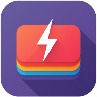

Твой репозиторий знаний...
Инициализация...
Совет: Используйте голосовой ввод для быстрого поиска вопросов
Новая версия приложения готова к установке. Обновите страницу для применения изменений.
Получайте уведомления о новых функциях и обновлениях приложения.